Aula 4 Análise
1 Introdução
Tendo as principais ferramentas para análise de dados – já sabemos carregar e limpar diferentes bases de dados, de várias formas –, daqui até o final do curso nos deteremos no próximo passo: a análise dos dados. Veremos as principais ferramentas, incluindo alguns modelos e gráficos simples, e também alguns procedimentos que nos ajudam a exportar resultados e criar documentos.
2 Rmarkdown
Ao longo do curso, estamos vendo notas de aulas em um website e slides que têm código embutido. Esses são apenas dois dos tipos de documentos que podem ser criados com o Rmarkdown, um formato dinâmico para criação de documentos com o R. De forma geral, o Rmarkdown combina texto e código, usando uma ferramenta chamada knitr para compilar nosso código e outra chamada pandoc para converter nosso texto para diversos formatos.
Hoje começaremos a ver mais detidamente esse formato. Para tanto, exploraremos algumas opções de documentos que podem ser criados a partir do menu Create New Rmarkdown Document (no ícone branco com uma cruz em verde, no canto superior esquerdo do seu RStudio).
3 Gráficos
Veremos agora o pacote ggplot2, que é a ferramenta mais flexível no R para criar visualizações. Entre outros, ele é extremamente intuitivo e flexível. Praticamente qualquer gráfico imaginável pode ser criado com ele: mapas, diagramas, gráficos comentados, gráficos interpolados, entre inúmeros outros.
Como o ggplot2 faz parte do tidyverse, só precisamos carregá-lo com:
# Carrega o tidyverse
library(tidyverse)Para criarmos alguns gráficos, usaremos uma base de dados com informacoes de 853 municipios brasileiros auditados pela CGU, usados por Carnes e Lupu (2015) em artigo publicado no Journal of Politics. O objetivo do artigo é examinar se o grau de escolaridade de uma(o) política(o) afeta o seu desempenho no cargo, e esta base, em particular, contém diversas variaveis que são úteis para explorar a questão, tais como:
- Partido da prefeita;
- Idade;
- Escolaridade;
- Indicadores sociais e demográficos do município;
- Quantia detectada como corrupção pelo CGU no municipio.
Como a base está em formato .dta (‘carnes_lupu_2015_audits.dta’), usaremos o pacote rio para carregá-la:
library(rio)
dados <- import("carnes_lupu_2015_audits.dta")Podemos checar alguns detalhes do banco com funcções que já vimos:
glimpse(dados)
head(dados)Com ela carregada, podemos comaçar a trabalhar com gráficos Isto requer conhecer o básico da mecânica do ggplot, que é estruturada em camadas (layers). Em primeiro nivel, todo gráfico feito com ggplot começa com uma declaração explícita dos dados e das variáveis que serão usadas nos eixos. Declaramos isto por meio da função ggplot().
ggplot(dados, aes(x = urb, y = income))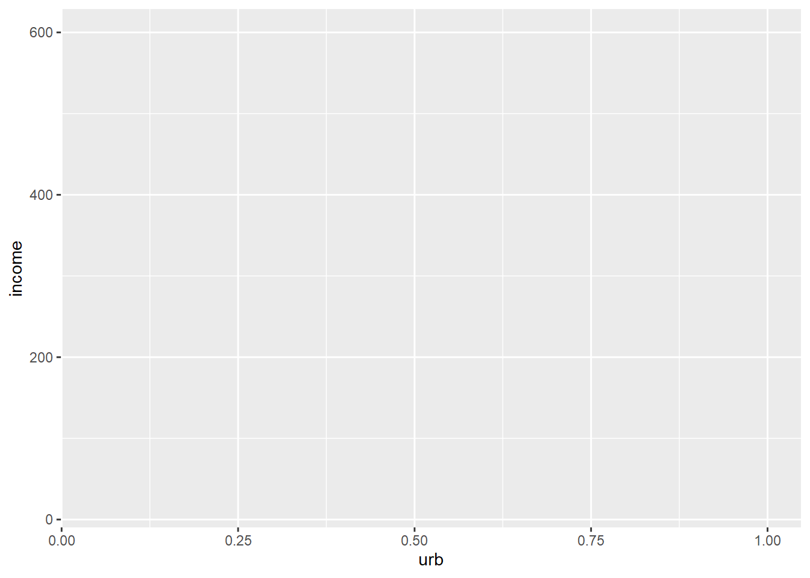
Como dá para ver, essa primeira camada cria um painel em branco, já indicando qual variável ficará no eixo X (urb) e no eixo Y (income). O próximo passo é indicar como iremos visualizar essa informação: aqui entra, especificamente, a seleção de tipo de gráfico que queremos criar. Usaremos um scatterplot.
ggplot(dados, aes(x = urb, y = income)) + geom_point()Como vimos, bastou adicionar uma nova função, antecedida por + (operador de união de layers no ggplot2), para indicar como a informação (os dados) deve ser exibidos. Essa é a chave de como o ggplot2 funciona: ele adiciona camadas sobre camadas para criar gráficos, e isso é um processo relativamente flexível porque nos permite adicionar, ou controlar, diversos aspectos de um gráfico, dos mais aos menos gerais.
Podemos adicionar uma curva GAM sobre os pontos que já criamos usando a função geom_smooth:
ggplot(dados, aes(x = urb, y = income)) + geom_point() + geom_smooth()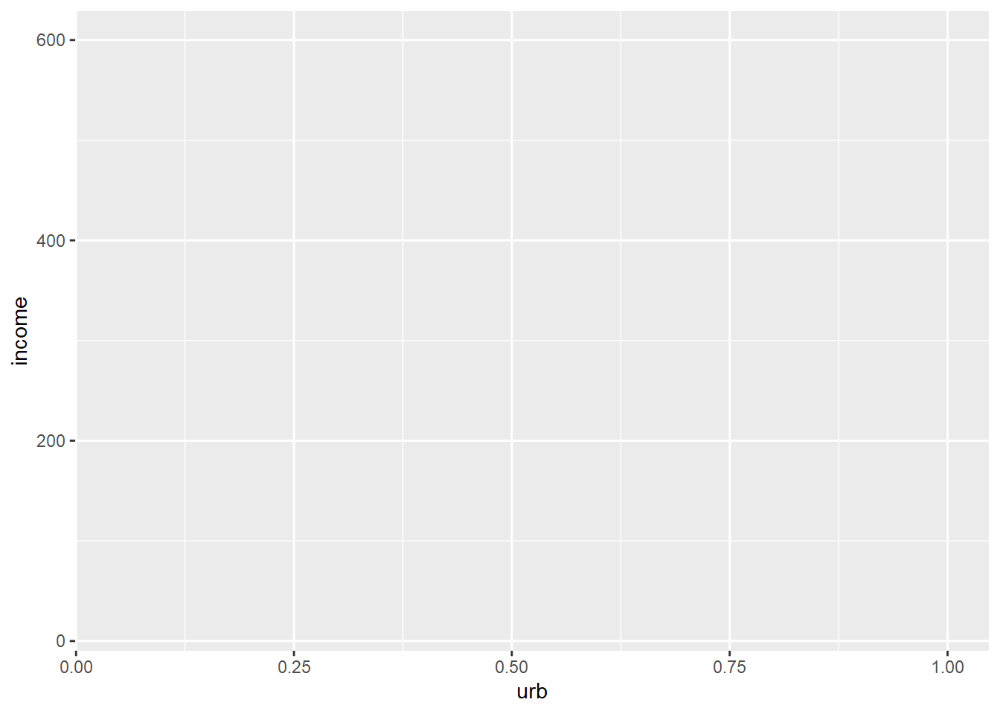
Ou podemos agrupar pontos comuns, criando um gráfico com pontos de diferentes tamanhos:
ggplot(dados, aes(x = urb, y = income)) + geom_count()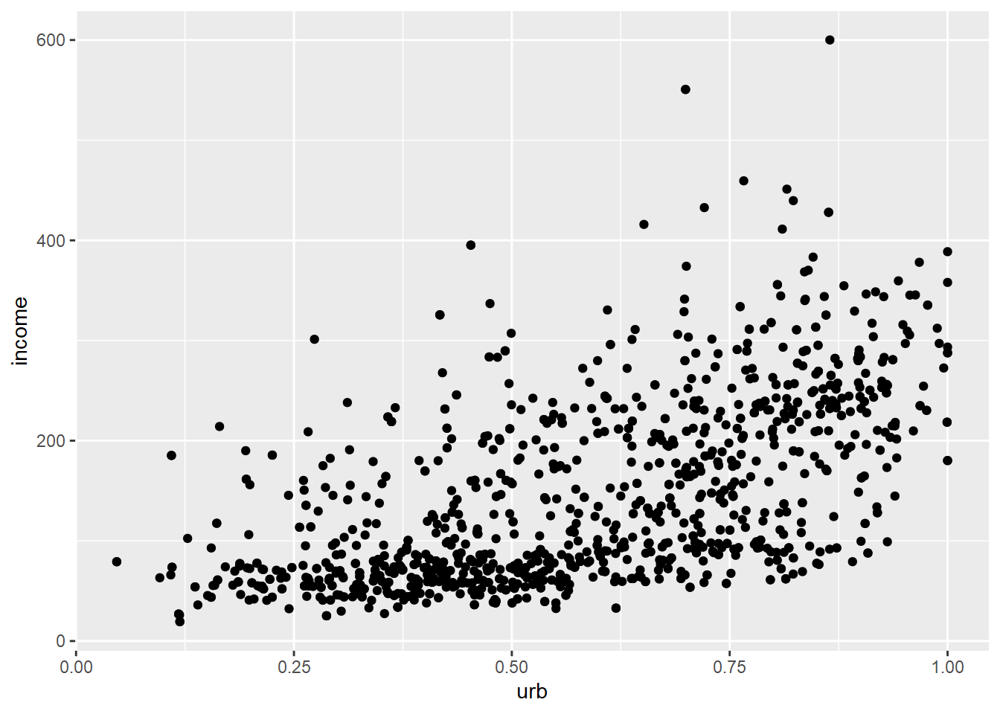
O que precisa ficar claro, aqui, é que cada camada de um gráfico deve seguir uma ordem mínima:
- Primeiro, usamos
ggplot()para passar dados e indicar as variáveis de cada eixo; - Segundo, indicamos os
geoms(e.g.,geom_point) para criar as visualizações; - Por fim, adicionamos outros elementos, como o título dos eixos (usamos a função
labspara isso).
Alem disso, tambem é preciso notar que determinados gráficos requerem diferentes tipos de variáveis. Por exemplo, um scatterplot requer duas variáveis, com eixos X e Y. Já um histograma, diferentemente, requer apeanas uma , a do eixo X.
ggplot(dados, aes(x = urb)) + geom_histogram()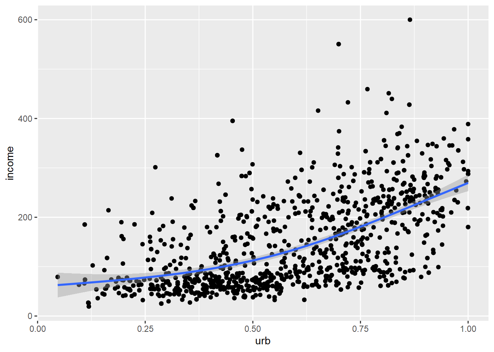
Outros gráficos ainda requerem variáveis adicionais. Por exemplo, vamos criar o gráfico de pontos com urb vs. income novamente.
ggplot(dados, aes(x = urb, y = income)) + geom_point()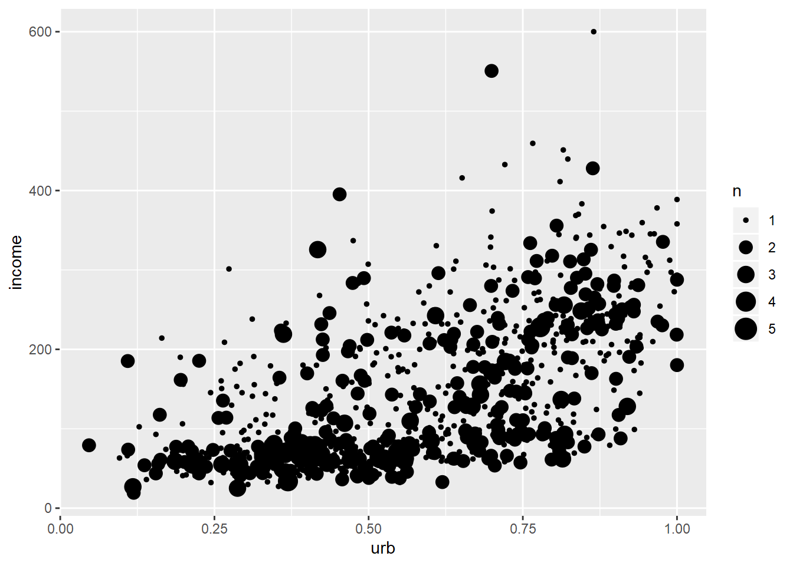
Ele indica a relação entre urb e income de um município. Mas vamos dizer que queremos adicionar uma terceira dimensão no gráfico, como literacy. Para isso, passamos mais uma variável para a função aes():
ggplot(dados, aes(x = urb, y = income, color = literacy)) + geom_point()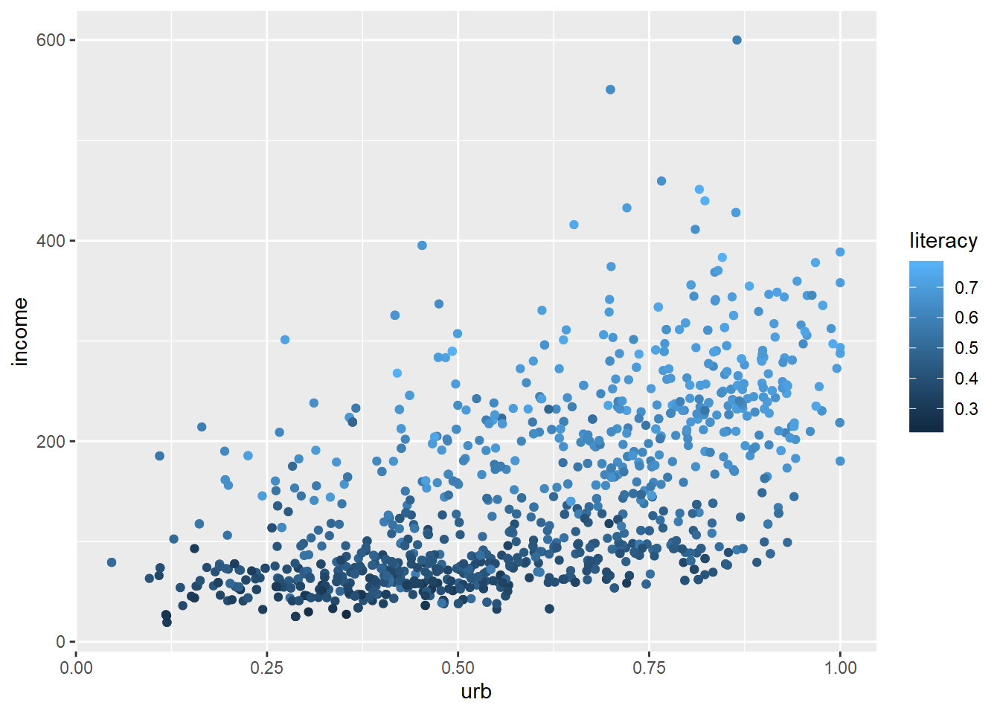
Em resumo, todos os gráficos que fizemos seguem um padrão: adicionamos elementos a ele em camadas, somando funções: isto() + aquilo() + etc()
Dentro outros, também vimos que:
aes()(de aesthetics) é usada para as variáveis (primeira camada);- as funcoes
geom_(de geometry) são usadas para plotar as informações (segunda camada); - e que outras funções podem ser combinadas (quarta, quinta, sexta, etc, camadas).
Exercícios I
ggplot2 I
Carregue os dados de Carnes e Lupu (2015) e, com o ggplot2, crie um gráfico scatterplot (geom_point()) que tenha como eixo X a variável pop e, no eixo Y, a variável literacy.
ggplot2 II
Agora, crie um histograma da variavel pop.
ggplot2 III
De novo, crie um scatterplot de age (eixo X) e pop (eixo Y).
3 Mais gráficos
Vamos nos concentrar agora em alguns dos tipos mais comuns de gráficos:
- Scatterplot;
- Gráfico de linhas;
- Gráfico de barras;
- Histograma.
Existem vários outros tipos úteis para uma análise, mas a mecânica de como criá-los é bastante semelhante a desses que veremos. Se nos concentrarmos apenas nesses, portanto, será mais fácil aprender a criar qualquer outro.
Já vimos um scatterplot e um histograma antes:
# Scatterplot
ggplot(dados, aes(x = urb, y = income)) + geom_point()# Histograma
ggplot(dados, aes(x = urb)) + geom_histogram()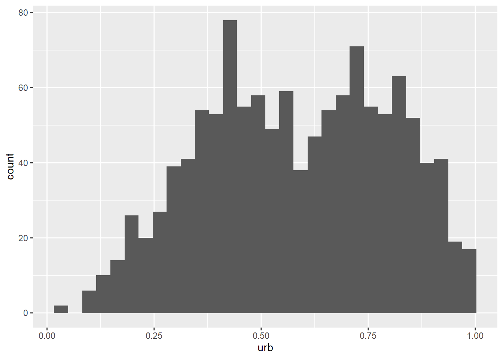
Para criar outros gráficos, podemos gerar algumas variáveis (veremos a razão disso a seguir):
# Usamos mutate para criar duas variaveis
dados <- mutate(dados,
mulher = ifelse(female == 1, "Mulher", "Homem"),
ensino = ifelse(college == 1, "Superior", "Outros"))3.1 Barras
Gráficos de barras servem principalmente para reportar frequências. Podemos usar ele, por exemplo, para saber quantos dos municipios da base foram governados por mulheres prefeitas:
# So' precisamos usar geom_bar para criar visualizacoes de barras
ggplot(dados, aes(x = mulher)) + geom_bar()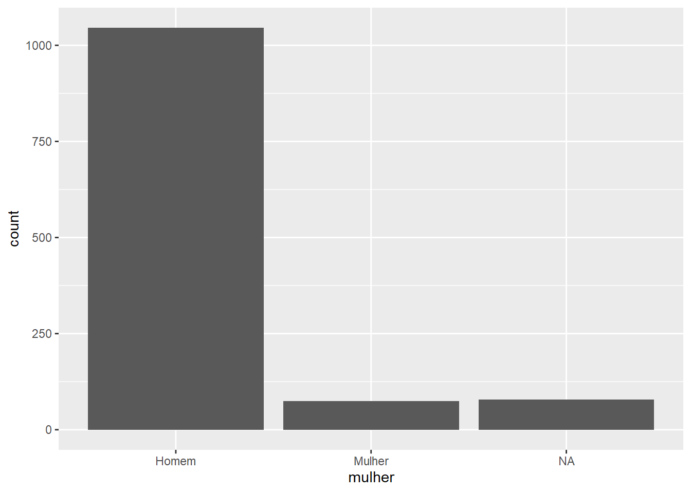
Como é possível ver, a esmagadora maioria dos municípios foram governados por homens. Também é possível ver que valores com NA (missing) apareceram na base. Vamos lidar com isso daqui a pouco. Antes, vamos ver a distribuição do ensino.
ggplot(dados, aes(x = ensino)) + geom_bar()Nesta variavel, nao há missings. Ensino superior é comum entre as(os) prefeitas(os) da amostra.
Às vezes, contudo, precisamos reportar em um gráfico o cruzamento de mais de uma variável. Imagine que queiramos ver quantos prefeitos homens e mulheres, separadamente, têm ensino superior. Com aes() do ggplot2, precisamos apenas declarar uma variável adicional para realizar isso: a variavel fill.
ggplot(dados, aes(x = mulher, fill = ensino)) + geom_bar()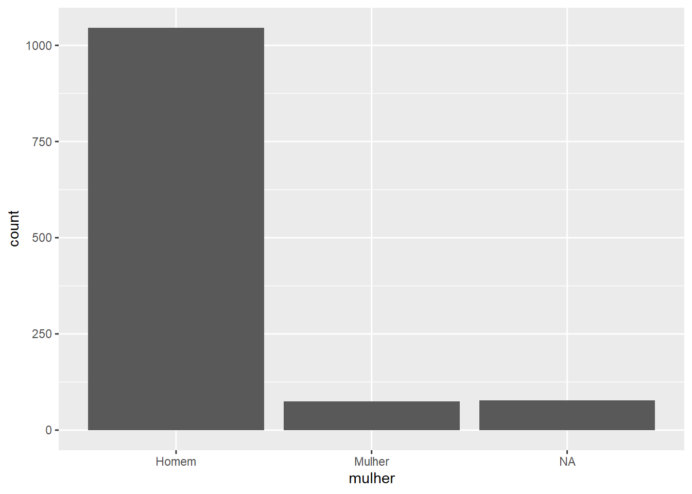
fill serve para incluir uma dimensão de cores em um gráfico. Diferentemente de color, contudo, ela serve para preencher cores, e não para criar contornos. Observe a diferença.
ggplot(dados, aes(x = mulher, color = ensino)) + geom_bar() # Usando color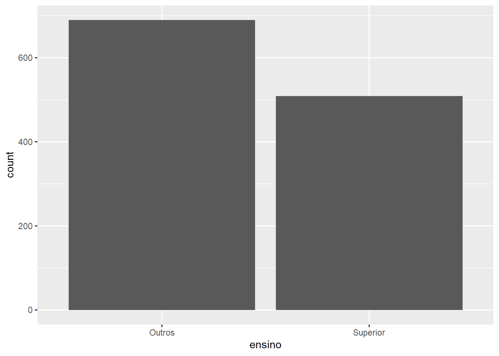
ggplot(dados, aes(x = mulher, fill = ensino)) + geom_bar() # Usando fill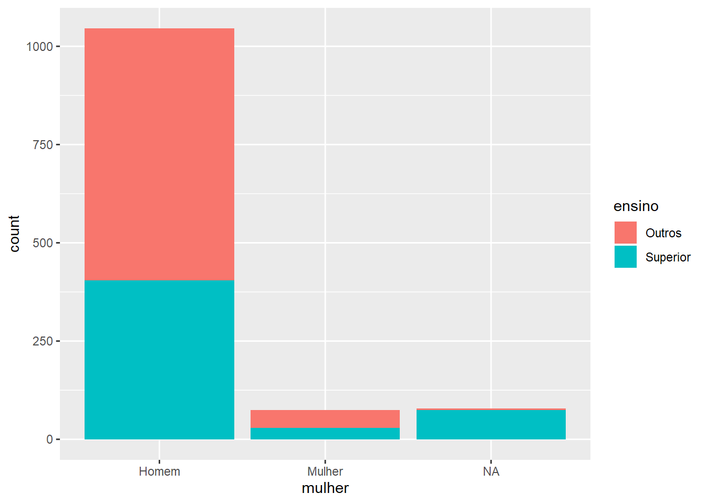
Existe uma função scale_fill que nos permite controlar as cores (para cores, a função é scale_color_manual:
ggplot(dados, aes(x = mulher, fill = ensino)) +
geom_bar() +
scale_fill_manual(values = c("black", "gray")) # Preto e cinza
ggplot(dados, aes(x = mulher, fill = ensino)) +
geom_bar() +
scale_fill_manual(values = c("orange", "black")) # Laranja e preto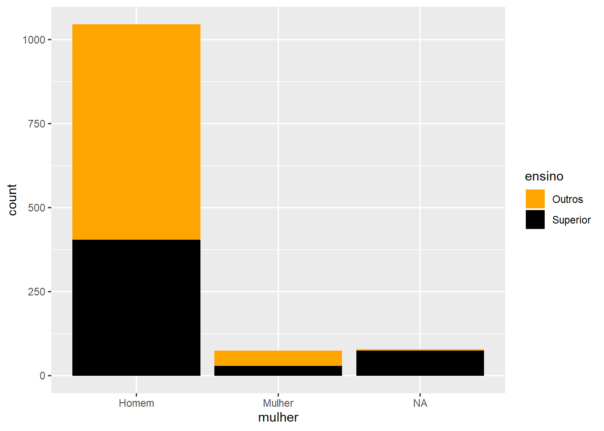
3.2 Linhas
E quanto aos gráficos de linhas? Geralmente, estes são usados para visualizar séries temporais, algo que não temos na nossa base de municípios. Podemos carregar a base de ontem, sobre homicídios nos estados, para explorar isso. Como você deve lembrar, precisamos usar gather para colocar ela em formato de painel.
# Carrega o pacote readxl, para ler excel
library(readxl)
# Carrega os dados
base_homic <- read_excel("homicidios_uf.xls")
# Coloca ele no formato tidy, de painel
base_homic <- gather(base_homic, ano, homicidios, -Sigla, -Codigo, -Estado)Também vamos filtrar apenas um estado, para facilitar as coisas:
# Usamos filter para filtrar o Parana
parana <- filter(base_homic, Sigla == "PR")Para plotar esta série, basta usar geom_line e passar os eixos X e Y (e também usar group = 1, para indicar que nossa série só tem uma linha).
ggplot(parana, aes(x = ano, y = homicidios, group = 1)) + geom_line()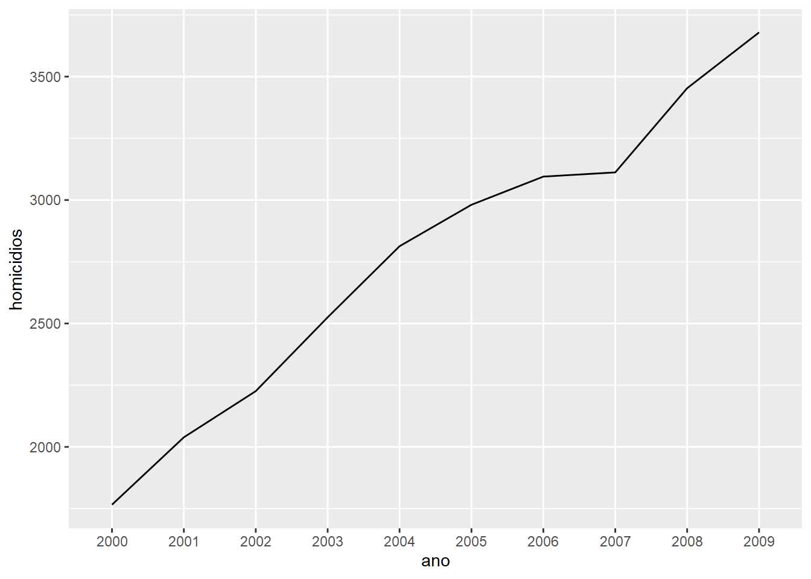
E o mesmo valeria para qualquer outro estado:
bahia <- filter(base_homic, Sigla == "BA")
ggplot(bahia, aes(x = ano, y = homicidios, group = 1)) + geom_line()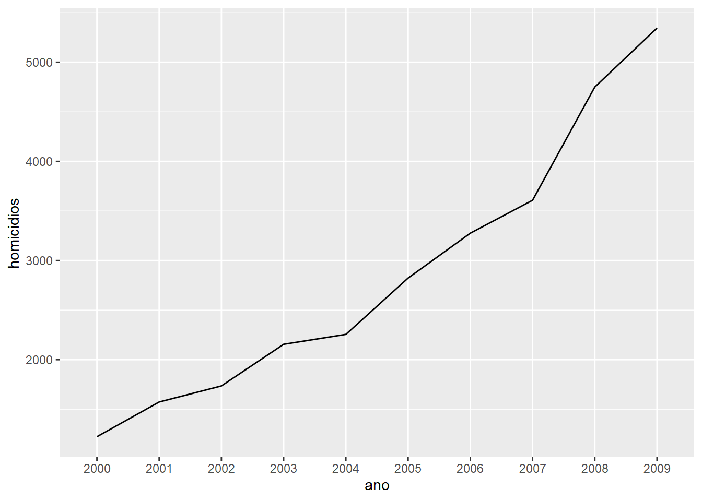
4 Exportação de gráficos
Gráficos também podem ser salvos em objetos. Vamos gerar e salvar o da Bahia novamente, por exemplo:
graf_bahia <- ggplot(bahia, aes(x = ano, y = homicidios)) + geom_line()Assim como com outros objetos, se quisermos checar seu conteúdo, basta executá-lo:
graf_bahia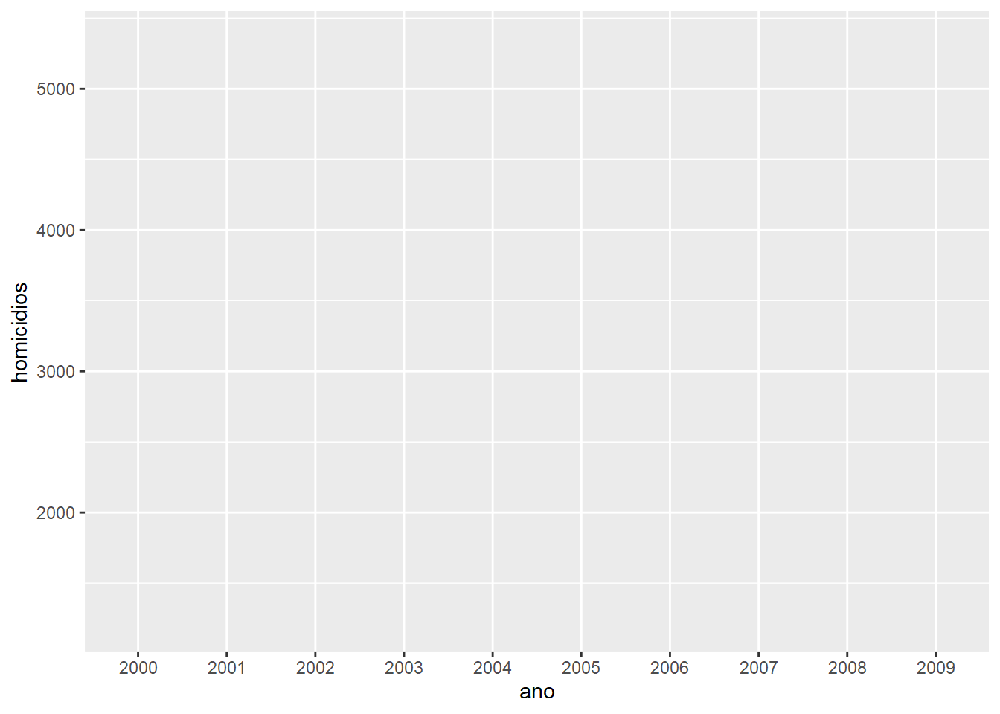
E, assim também como salvamos bancos de dados para arquivos, podemos usar algumas funções para salvar esses gráficos no disco. A principal e mais útil delas é ggsave. Usamos ela assim:
# Salva nosso grafico em PNG no disco
ggsave(plot = graf_bahia, filename = "grafico_da_bahia.png")Para alterar a resolução, usamos os argumentos width (largura) e heigth (altura) em polegadas (podemos alterar para centímetros ou pixels usando o argumento units):
# Salva com resolucao de 4 por 7 polegadas
ggsave(plot = graf_bahia,
filename = "grafico_da_bahia.png",
height = 4,
width = 7)
# Salva com resolucao de 10 por 15 centimetros
ggsave(plot = graf_bahia,
filename = "grafico_da_bahia.png",
height = 10,
width = 15,
units = "cm")Especialmente no Windows, apenas isso pode produzir gráficos com distorções (pixels quebrados, linhas granulares, etc). Para evitar isso, usamos:
# Cairo para evitar distorcoes
ggsave(plot = graf_bahia, filename = "grafico_da_bahia.png", type = "cairo-png")Exercícios II
Histograma I
Ainda usando os dados de Carnes e Lupu (2015), crie um histograma da idade das prefeitas(os) da base (variável age).
Histograma II
Com o auxílio de outras funções do tidyverse para criar variáveis, crie um histograma com a proporção de tudo o que o CGU considerou como gasto irregular das prefeituras (será necessário somar as variáveis fraction_broad e fraction_narrow).
Barras I
Crie um grpafico de barras com a frequência de municípios com casos de corrupção ampla (variável broad).
Barras II
Usando cores (argumento fill), crie o mesmo gráfico de barras anterior, mas separe por cores o tipo de ensino (criando uma nova variável, como vimos anteriormente).
Homework
Atividade (Aula IV)
Para essa aula, a atividade será livre – como uma preparação para o projeto final. Usando a base da aula de ontem sobre Teses de Doutorado defendidas na UFMG entre 1987 e 2016 (que está na pasta aula_3), crie um notebook ou outro arquivo em Rmarkdown e coloque nele o código para carregar os dados e criar um gráfico a partir deles.